<!DOCTYPE lake>
<h2 data-lake-id="exJBH" id="exJBH"><span data-lake-id="u806d12e3" id="u806d12e3">学习目标</span></h2><ol list="u233b9c55"><li data-lake-id="u33084f75" fid="u792fc276" id="u33084f75"><span data-lake-id="u3f38a1c2" id="u3f38a1c2">理解原理图</span></li><li data-lake-id="u9ef7e7df" fid="u792fc276" id="u9ef7e7df"><span data-lake-id="u1c675648" id="u1c675648">理解蓝牙调试的流程</span></li><li data-lake-id="u4963672b" fid="u792fc276" id="u4963672b"><span data-lake-id="u0ec3a061" id="u0ec3a061">能够编写串口转蓝牙的驱动</span></li></ol><h2 data-lake-id="M2MoT" id="M2MoT"><span data-lake-id="u29f42347" id="u29f42347">学习内容</span></h2><h3 data-lake-id="yz5J5" id="yz5J5"><span data-lake-id="ua03b5a30" id="ua03b5a30">蓝牙协议</span></h3><p data-lake-id="u500749cd" id="u500749cd"><span data-lake-id="u091c8686" id="u091c8686">蓝牙协议是一个很丰富的协议，总体可以分为：</span></p><ol list="u1f20dd57"><li data-lake-id="uf7350299" fid="u0eecb85f" id="uf7350299"><span data-lake-id="ub932d2ba" id="ub932d2ba">基础协议(Basic Rate/Enhanced Data Rate，BR/EDR)：也称为蓝牙经典蓝牙协议，使用2.4GHz频段进行通信，支持点对点、广播和组播通信等。</span></li><li data-lake-id="u7bc746b1" fid="u0eecb85f" id="u7bc746b1"><span data-lake-id="u2e06460c" id="u2e06460c">高速协议(Bluetooth High Speed，HS)：支持3种速率，分别为1Mbps、2Mbps和3Mbps，主要用于数据传输。</span></li><li data-lake-id="u0b7591a0" fid="u0eecb85f" id="u0b7591a0"><span data-lake-id="u6eabfe53" id="u6eabfe53">低功耗蓝牙协议(Bluetooth Low Energy，BLE)：也称为蓝牙智能协议，主要用于低功耗应用场景，例如传感器、健康监测设备、智能家居等。</span></li><li data-lake-id="uf2f6dbe7" fid="u0eecb85f" id="uf2f6dbe7"><span data-lake-id="ud7a32d7e" id="ud7a32d7e">蓝牙Mesh协议：一种基于蓝牙技术的无线Mesh网络协议，适用于物联网设备间的通信。</span></li></ol><p data-lake-id="u2322d3a7" id="u2322d3a7"><span data-lake-id="u917e392d" id="u917e392d">对于基础协议(Basic Rate/Enhanced Data Rate，BR/EDR)，可以具体分为以下几个协议栈:</span></p><ol list="u07a4ab0f"><li data-lake-id="u0b2d4891" fid="u0613a4f0" id="u0b2d4891"><span data-lake-id="u9fa30071" id="u9fa30071">L2CAP（逻辑链路控制和适配协议）：提供数据报文的封装和多路复用等功能。</span></li><li data-lake-id="u19f34fee" fid="u0613a4f0" id="u19f34fee"><span data-lake-id="uf34a2258" id="uf34a2258">RFCOMM（无线串行端口协议）：提供类似于串口的数据通信服务。</span></li><li data-lake-id="u955517df" fid="u0613a4f0" id="u955517df"><span data-lake-id="u84283771" id="u84283771">SDP（服务发现协议）：用于设备间的服务发现和信息查询。</span></li><li data-lake-id="uc9b0fe91" fid="u0613a4f0" id="uc9b0fe91"><span data-lake-id="uea5c167f" id="uea5c167f">GAP（通用访问协议）：提供设备发现、连接和配对等基础功能。</span></li><li data-lake-id="u7f8a2a9f" fid="u0613a4f0" id="u7f8a2a9f"><span data-lake-id="ue394a913" id="ue394a913">GATT（通用属性协议）：提供设备间的数据交换服务。</span></li></ol><p data-lake-id="u529012cc" id="u529012cc"><span data-lake-id="u7efb1289" id="u7efb1289">我们今天要学习的蓝牙模组的SPP模式，就是这个基础协议中的RFCOMM协议。</span></p><p data-lake-id="ua1d34436" id="ua1d34436"><span data-lake-id="u96779a1d" id="u96779a1d">​</span><br/></p><p data-lake-id="ufb543a52" id="ufb543a52"><strong><span data-lake-id="uef68aa56" id="uef68aa56">SPP (Serial Port Profile):</span></strong></p><p data-lake-id="u752e2ec9" id="u752e2ec9"><span data-lake-id="ue5c33a14" id="ue5c33a14">SPP代表串口配置文件，它是蓝牙技术中的传统蓝牙协议之一。SPP旨在模拟传统的串口通信，使设备能够通过蓝牙建立虚拟的串口连接，并通过该连接进行数据传输。这种协议通常用于传输简单的串行数据，例如从一个设备向另一个设备发送文本、命令或其他基本数据。</span></p><p data-lake-id="u6cb80d92" id="u6cb80d92"><span data-lake-id="ua92bf7a3" id="ua92bf7a3">​</span><br/></p><p data-lake-id="uc4b7124a" id="uc4b7124a"><strong><span data-lake-id="ub6497d28" id="ub6497d28">BLE (Bluetooth Low Energy):</span></strong></p><p data-lake-id="uadb1abba" id="uadb1abba"><span data-lake-id="u5320f677" id="u5320f677">BLE代表低功耗蓝牙，也被称为蓝牙4.0或蓝牙Smart。它是蓝牙技术的另一种变体，专门设计用于低功耗设备之间的通信。BLE主要用于与物联网（IoT）设备、传感器、健康设备和其他需要低功耗和较短通信距离的设备进行通信。相比传统的蓝牙，BLE在连接过程和数据传输中消耗更少的能量。</span></p><p data-lake-id="u913e6e39" id="u913e6e39"><span data-lake-id="uf922d43c" id="uf922d43c">​</span><br/></p><p data-lake-id="uaa3f9682" id="uaa3f9682"><span data-lake-id="ue7661cc2" id="ue7661cc2">对于低功耗蓝牙协议(BLE)，它使用的协议栈与经典蓝牙协议(BR/EDR)不同，主要由以下4层协议组成：</span></p><ol list="ua5fa3b50"><li data-lake-id="ubb6f818f" fid="u7feb38bb" id="ubb6f818f"><span data-lake-id="uada63a68" id="uada63a68">Physical Layer（物理层）：处理无线信号的收发和解调等任务。</span></li><li data-lake-id="ua903d0e2" fid="u7feb38bb" id="ua903d0e2"><span data-lake-id="uf6c00153" id="uf6c00153">Link Layer（链路层）：处理广播、扫描、连接和通信等任务。</span></li><li data-lake-id="ue154b330" fid="u7feb38bb" id="ue154b330"><span data-lake-id="u5e134762" id="u5e134762">Attribute Protocol（属性协议）：基于GATT协议实现，用于管理设备之间的数据交换。</span></li><li data-lake-id="ubd077af9" fid="u7feb38bb" id="ubd077af9"><span data-lake-id="u10bedb29" id="u10bedb29">Generic Access Profile（通用访问协议）：提供设备发现、连接和配对等基础功能。</span></li></ol><p data-lake-id="u6283bc7c" id="u6283bc7c"><span data-lake-id="ud5cc5e3a" id="ud5cc5e3a">BLE是蓝牙4.0提出的低功耗解决方案，今天学习的模组也是支持的，不过需要设备端额外的进行开发。</span></p><p data-lake-id="u8778b8fe" id="u8778b8fe"><span data-lake-id="u359c255e" id="u359c255e">​</span><br/></p><p data-lake-id="u3313622d" id="u3313622d"><span data-lake-id="u242a26d0" id="u242a26d0">蓝牙Mesh协议是基于BLE的，属于多设备组网协议。</span></p><h3 data-lake-id="PGHqO" id="PGHqO"><span data-lake-id="ub6191d7d" id="ub6191d7d">主从设备</span></h3><p data-lake-id="u6d37a08e" id="u6d37a08e"><span data-lake-id="u53c2c4bb" id="u53c2c4bb">蓝牙设备间进行连接，我们称为配对。配对的双方分主(Master)从(Slave)。</span></p><p data-lake-id="u0de9b1ec" id="u0de9b1ec"><span data-lake-id="u0cfe6963" id="u0cfe6963">蓝牙连接的设备分为主设备（Master）和从设备（Slave），主设备负责发起连接请求，而从设备则负责响应连接请求。</span></p><p data-lake-id="u99402c3d" id="u99402c3d"><span data-lake-id="u758ed182" id="u758ed182">在蓝牙传输数据的时候，主设备扮演着控制角色，负责传输控制信号和数据，从设备则被动地接受控制信号和数据。主设备可以连接多个从设备，但每个从设备只能连接一个主设备。</span></p><p data-lake-id="u1f24e095" id="u1f24e095">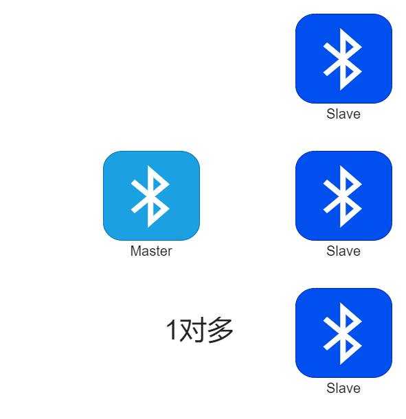</p><p data-lake-id="u91cc437b" id="u91cc437b"><span data-lake-id="u5fd3e79d" id="u5fd3e79d">在蓝牙连接中，主设备需要具备扫描和连接两个基本功能，扫描功能用于搜索周围的蓝牙设备，连接功能用于和蓝牙设备建立连接并传输数据。从设备则只需要具备连接功能。</span></p><p data-lake-id="ubaaf9755" id="ubaaf9755"><span data-lake-id="u4ec7d81c" id="u4ec7d81c">在蓝牙4.0之后，新增了低功耗蓝牙（Bluetooth Low Energy, BLE）协议，它也被称为蓝牙Smart。相比于传统的蓝牙，BLE具有低功耗、短距离、低速率等特点，可以用于物联网等需要长时间运行、低功耗的应用场景。在BLE中，主设备和从设备没有严格的区分，设备可以在不同的时间扮演主设备或从设备的角色，称之为主从切换（Master-Slave Switching）。</span></p><p data-lake-id="u75e60ca9" id="u75e60ca9"><span data-lake-id="u8d6a0385" id="u8d6a0385">​</span><br/></p><h3 data-lake-id="dlHO0" id="dlHO0"><span data-lake-id="uf3c98022" id="uf3c98022">原理图</span></h3><p data-lake-id="uc760e6b8" id="uc760e6b8">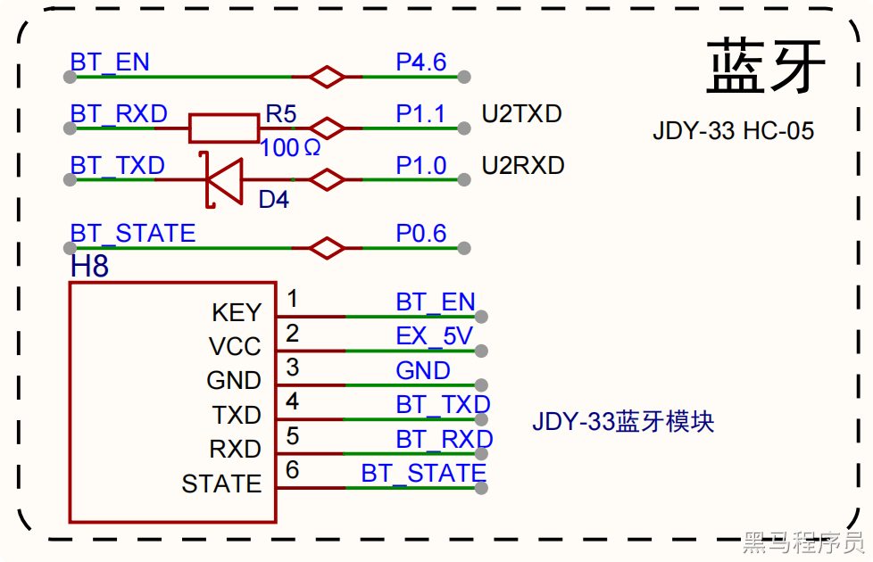</p><p data-lake-id="u6941ebc8" id="u6941ebc8">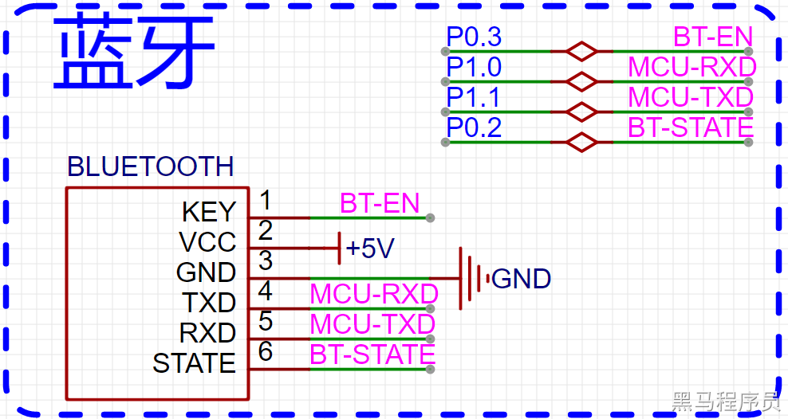</p><p data-lake-id="u1edc81c6" id="u1edc81c6"><span data-lake-id="u24b55b6f" id="u24b55b6f">我们的开发板是通过串口进行通讯的。</span></p><p data-lake-id="ub10e478b" id="ub10e478b">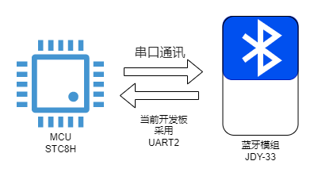</p><h3 data-lake-id="SktMq" id="SktMq"><span data-lake-id="ua09701af" id="ua09701af">蓝牙模块调试测路</span></h3><p data-lake-id="u9a50099b" id="u9a50099b">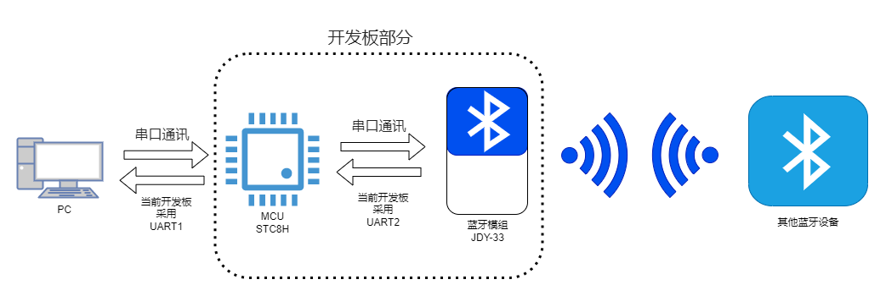</p><p data-lake-id="uf0f9e971" id="uf0f9e971"><span data-lake-id="u668160d3" id="u668160d3">上图为完整的开发调试过程中，交互的设备关系图。</span></p><p data-lake-id="u5f1e5e71" id="u5f1e5e71"><span data-lake-id="u3ab063bf" id="u3ab063bf">其中我们的开发板中包括了MCU和蓝牙模组，和蓝牙模组通讯采用的是串口，在当前开发板中采用的是串口2.</span></p><p data-lake-id="u7f92486f" id="u7f92486f"><span data-lake-id="u8b0e9fe0" id="u8b0e9fe0">我们在开发过程中，如果要对开发板进行打印输出调试，采用的时串口1。</span></p><p data-lake-id="u70adf74a" id="u70adf74a"><span data-lake-id="u22a75128" id="u22a75128">开发板中的蓝牙模组可以和其他蓝牙设备配对，两个设备可以进行相互通讯。</span></p><h3 data-lake-id="m5eHu" id="m5eHu"><span data-lake-id="u58f2b70d" id="u58f2b70d">AT指令测试</span></h3><p data-lake-id="u84262bd1" id="u84262bd1"><span data-lake-id="u96493353" id="u96493353">AT是Attention的缩写，表示指令开始信号。AT指令集常见于通讯设备的内部控制指令。如蓝牙、WIFI模块等等。</span></p><p data-lake-id="u35dbc9ce" id="u35dbc9ce"><span data-lake-id="u28f51e8e" id="u28f51e8e">当前的蓝牙模块可以通过AT指令来获取或者设置一些信息。我们需要通过发送AT指令的方式来进行操作，因此我们需要一个调试环境，下图中，我们使用PC进行调试：</span></p><p data-lake-id="u89ba37a9" id="u89ba37a9">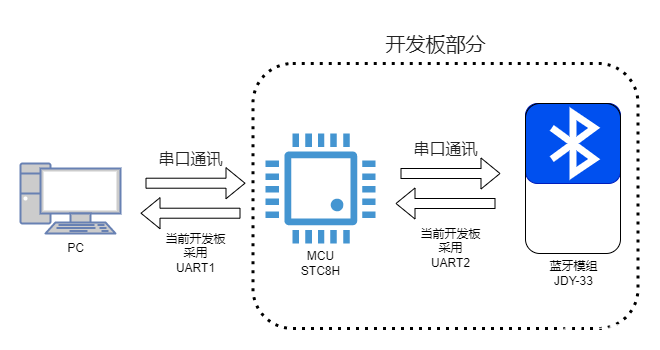</p><p data-lake-id="u0d33b63b" id="u0d33b63b"><span data-lake-id="uc4775bea" id="uc4775bea">PC端通过串口1将AT指令发送给我们的MCU，MCU收到指令后，通过串口2转给蓝牙模组，这样就间接的通过PC来调试蓝牙模组了。</span></p><p data-lake-id="u66d84687" id="u66d84687"><span data-lake-id="u9f5f8c67" id="u9f5f8c67">通过调试工具进行测试：</span></p><p data-lake-id="u052a5e83" id="u052a5e83">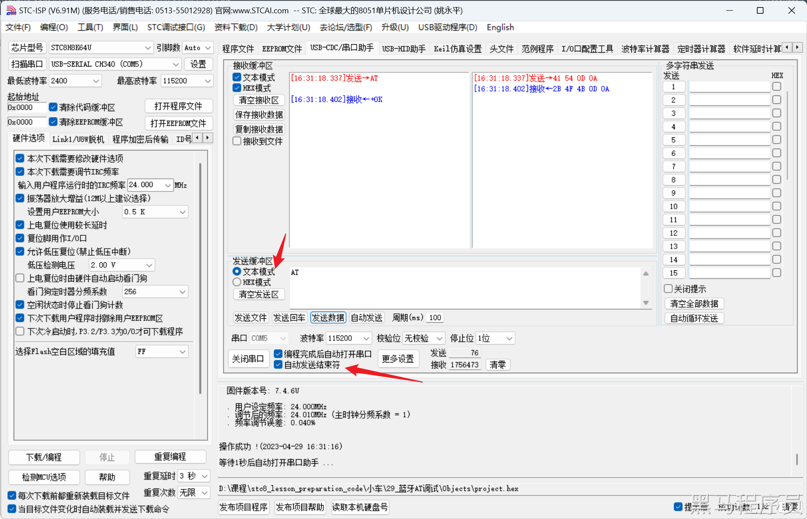</p><p data-lake-id="u96496944" id="u96496944"><span data-lake-id="uf2be92c5" id="uf2be92c5">注意：AT指令结束需要加上换行符号，否则蓝牙模组不会应答数据。</span></p><h3 data-lake-id="JHK8B" id="JHK8B"><span data-lake-id="u90ea467c" id="u90ea467c">蓝牙设备间通讯</span></h3><p data-lake-id="ue46635f1" id="ue46635f1"><span data-lake-id="ubcc85956" id="ubcc85956">我们的蓝牙模组做为蓝牙设备的一方，需要和其他蓝牙设备进行通讯</span></p><p data-lake-id="uca005f61" id="uca005f61">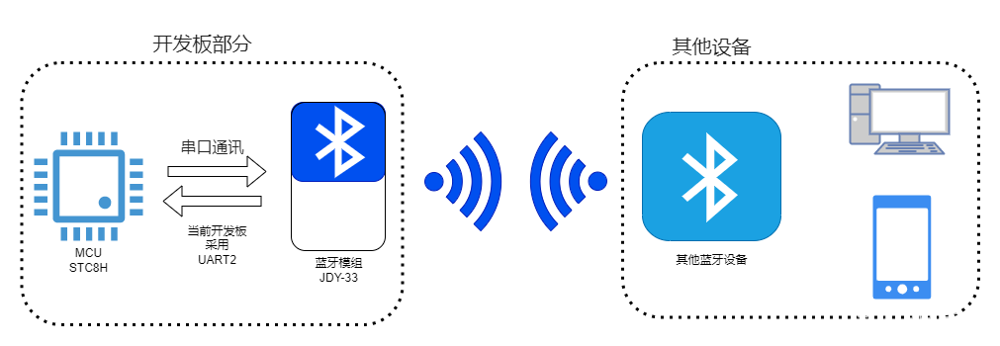</p><p data-lake-id="ubd13ce14" id="ubd13ce14"><span data-lake-id="uaaf6f484" id="uaaf6f484">其他设备可以是电脑，手机等等，具有蓝牙模块的设备。</span></p><p data-lake-id="u004305ff" id="u004305ff"><span data-lake-id="u2d674769" id="u2d674769">为了调试方便，我们使用我们的笔记本电脑进行调试，现在的笔记本电脑都有蓝牙模块。</span></p><h4 data-lake-id="aqNxh" id="aqNxh"><span data-lake-id="u9e946823" id="u9e946823">笔记本蓝牙调试</span></h4><p data-lake-id="ubed5c85e" id="ubed5c85e"><span data-lake-id="ud2189f79" id="ud2189f79">我们要调试的是开发板端和笔记本蓝牙端的通讯。我们为了方便调试，我们对两端提供一些调试便利。</span></p><p data-lake-id="u9252b44b" id="u9252b44b"><span data-lake-id="u658eb1ec" id="u658eb1ec">我们先看开发板端的调试方式:</span></p><p data-lake-id="uc2ba57fc" id="uc2ba57fc"></p><p data-lake-id="u90de5b15" id="u90de5b15"><span data-lake-id="u1c225885" id="u1c225885">其实更具体点，应该是通过PC端的串口调试工具进行给蓝牙模组进行调试。</span></p><p data-lake-id="u858a3ef7" id="u858a3ef7">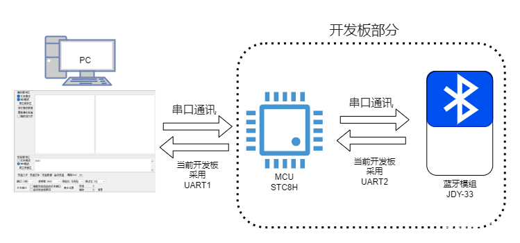</p><p data-lake-id="u007f991b" id="u007f991b"><span data-lake-id="u911a121c" id="u911a121c">接下来我们看看蓝牙设备端部分，如果要调试设备端的蓝牙通讯，同样需要有工具进行调试。</span></p><p data-lake-id="u87fae090" id="u87fae090">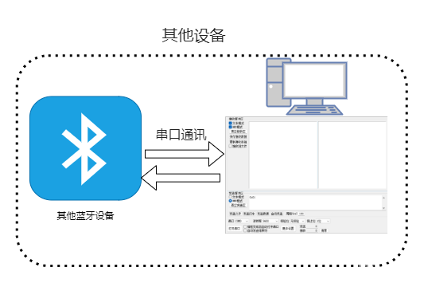</p><p data-lake-id="uf28c2afb" id="uf28c2afb"><span data-lake-id="ub699c2b3" id="ub699c2b3">如果将两者串起来就是一套完整的测试链：</span></p><p data-lake-id="u8fa0df11" id="u8fa0df11">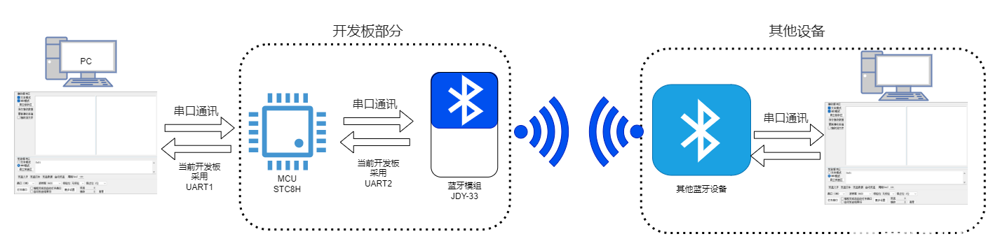</p><h4 data-lake-id="XQYbU" id="XQYbU"><span data-lake-id="ud8e266cb" id="ud8e266cb">设备端蓝牙转串口配置</span></h4><ol list="ua6be790b"><li data-lake-id="ue94f03dd" fid="u432c1607" id="ue94f03dd"><span data-lake-id="u2d967ff9" id="u2d967ff9">打开设置中的蓝牙按照下图，将笔记本的蓝牙和开发板的蓝牙进行配对。</span></li></ol><p data-lake-id="u8a1b2502" id="u8a1b2502" style="padding-left: 2em">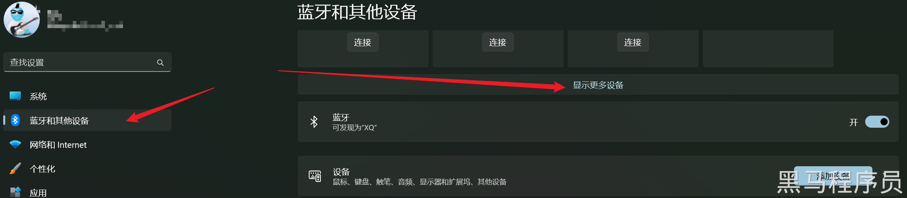</p><p data-lake-id="u89ef057e" id="u89ef057e" style="padding-left: 2em">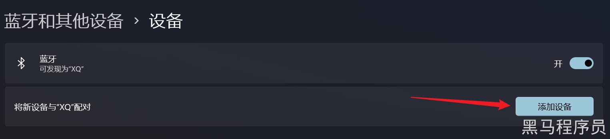</p><p data-lake-id="u2678dc9f" id="u2678dc9f" style="padding-left: 2em">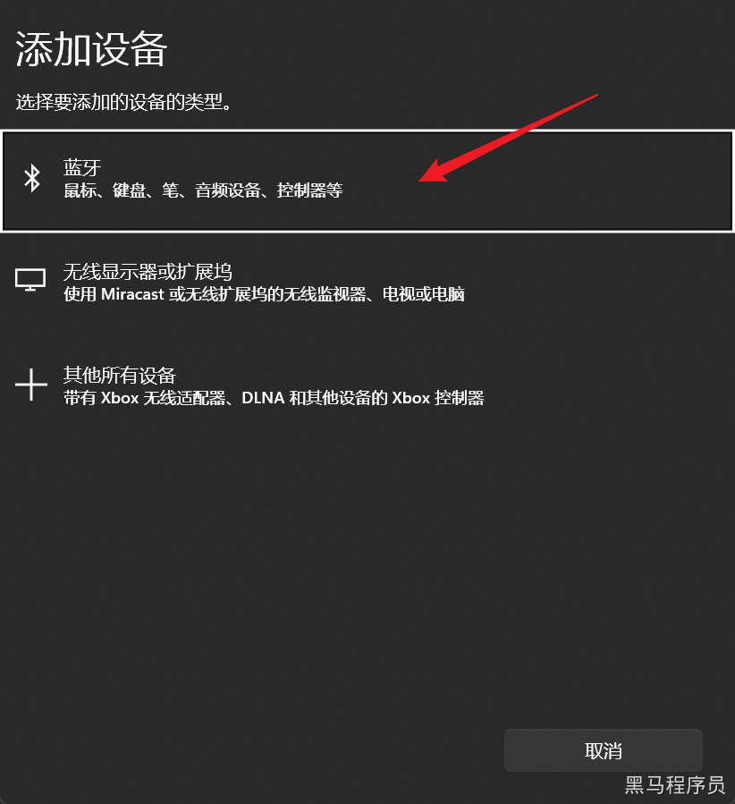</p><p data-lake-id="u310958bc" id="u310958bc" style="padding-left: 2em">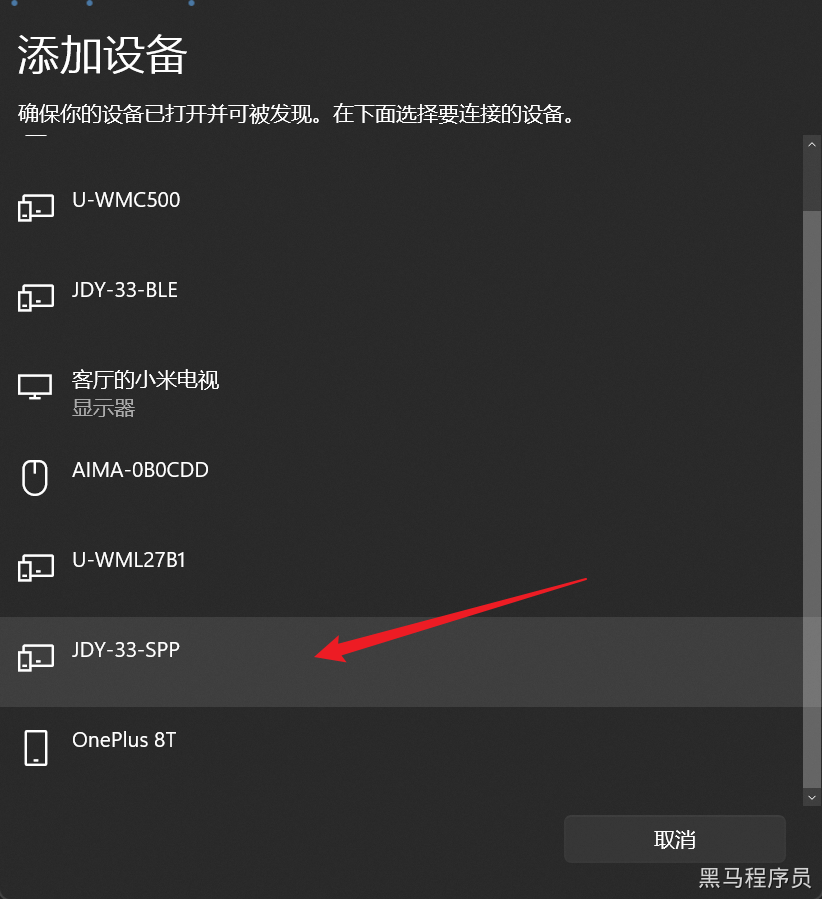</p><p data-lake-id="u69f6bd49" id="u69f6bd49" style="padding-left: 2em">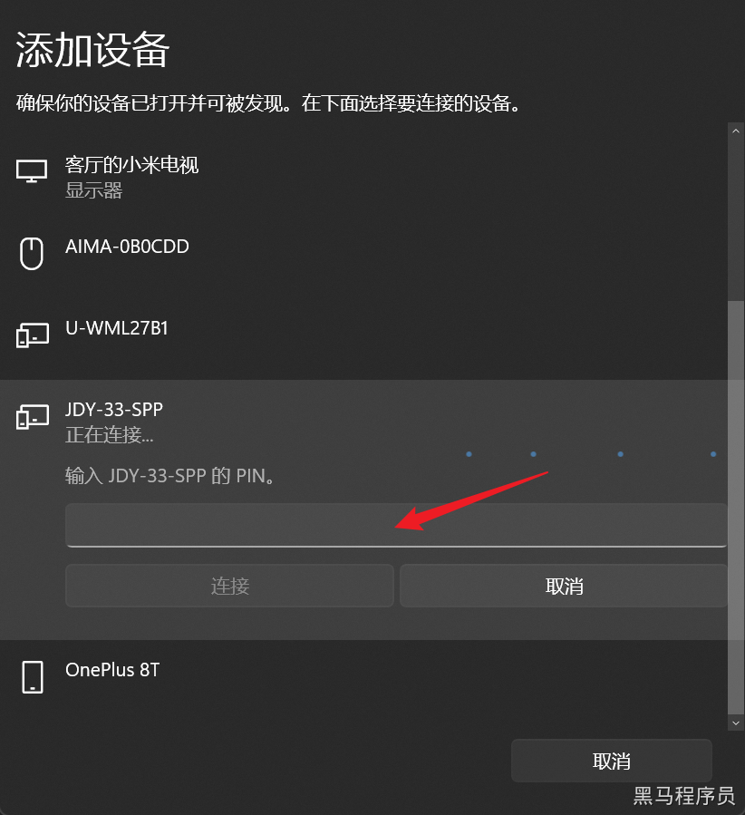</p><p data-lake-id="u3825d083" id="u3825d083" style="padding-left: 2em"><span data-lake-id="u5ff3f540" id="u5ff3f540">PIN值为1234，输入，然后点击连接。</span></p><p data-lake-id="u0a42b42f" id="u0a42b42f" style="padding-left: 2em">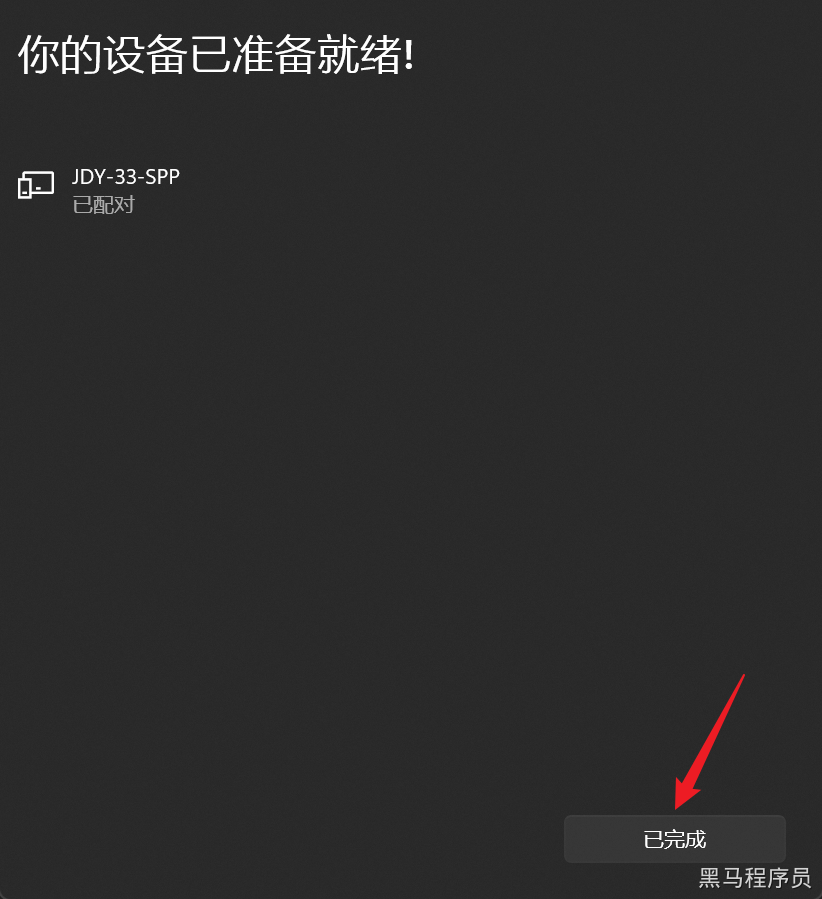</p><ol list="ue8436561" start="2"><li data-lake-id="uc029981d" fid="uf6ed4792" id="uc029981d"><span data-lake-id="u1524d01c" id="u1524d01c">配对完成后。我们的开发板和笔记本的蓝牙就联通了，为了调试方便，需要将笔记本的蓝牙转换成串口。</span></li></ol><p data-lake-id="u9ce7f004" id="u9ce7f004" style="padding-left: 2em">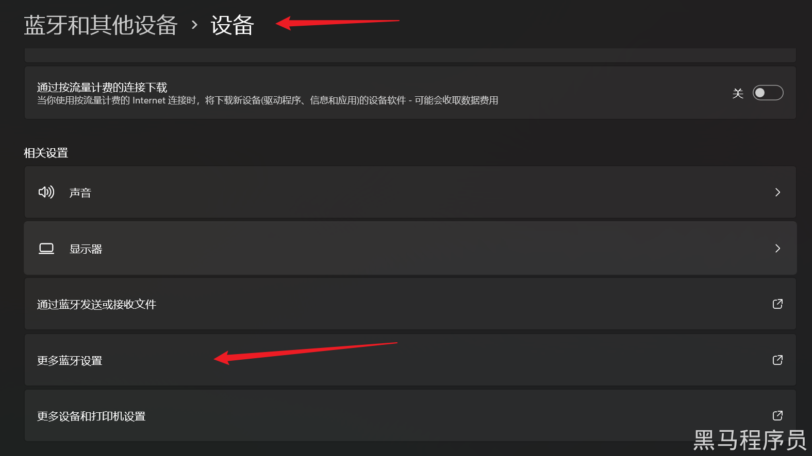</p><p data-lake-id="ucb38552c" id="ucb38552c" style="padding-left: 2em">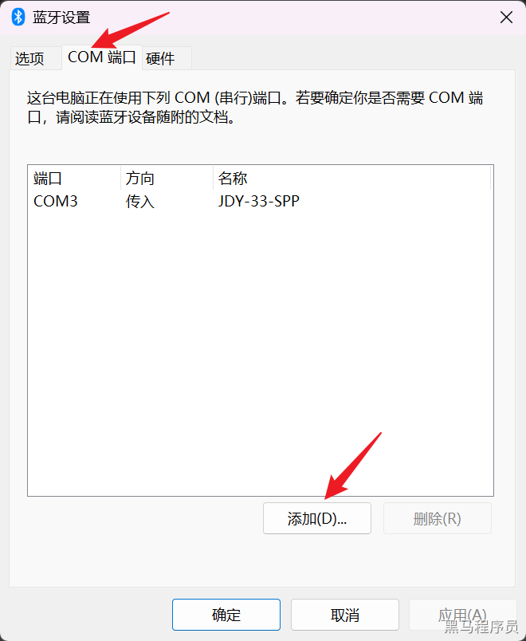</p><p data-lake-id="u23bb2779" id="u23bb2779" style="padding-left: 2em">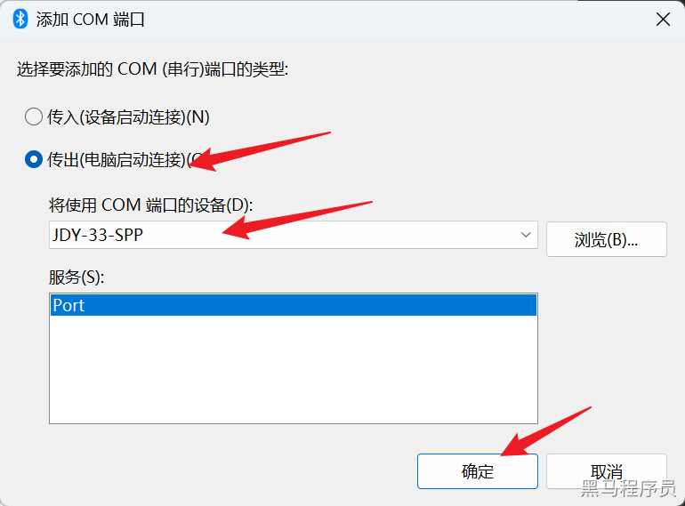</p><p data-lake-id="ucc66b096" id="ucc66b096" style="padding-left: 2em">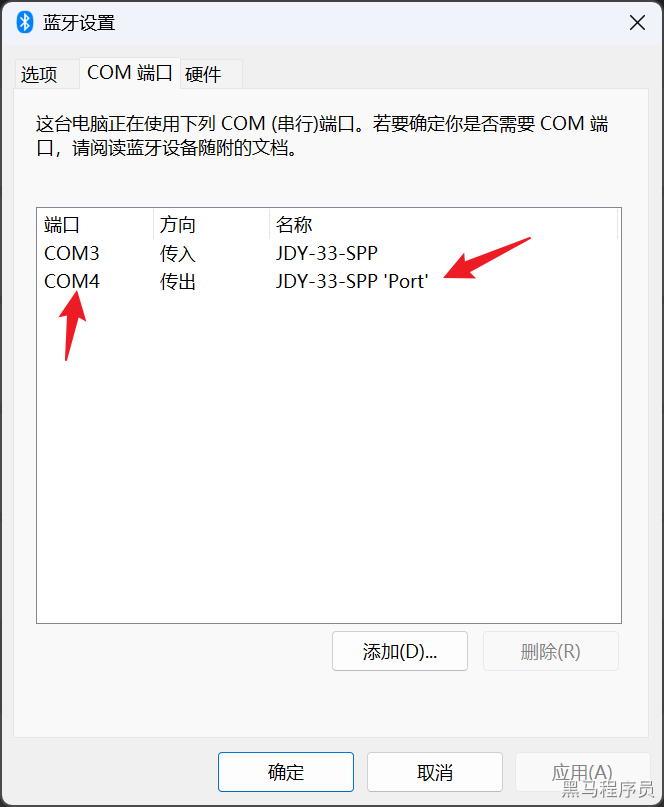</p><ol list="u5b01a7d3" start="3"><li data-lake-id="ua81cf877" fid="u2e28d805" id="ua81cf877"><span data-lake-id="u9aa55851" id="u9aa55851">通过串口调试笔记本端的蓝牙和开发板的蓝牙</span></li></ol><p data-lake-id="udf4a702f" id="udf4a702f" style="padding-left: 2em">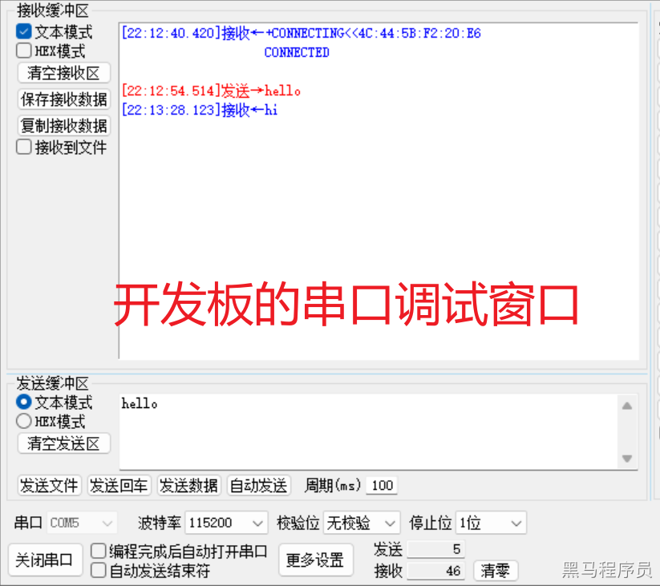</p><p data-lake-id="u8edef7e0" id="u8edef7e0" style="padding-left: 2em">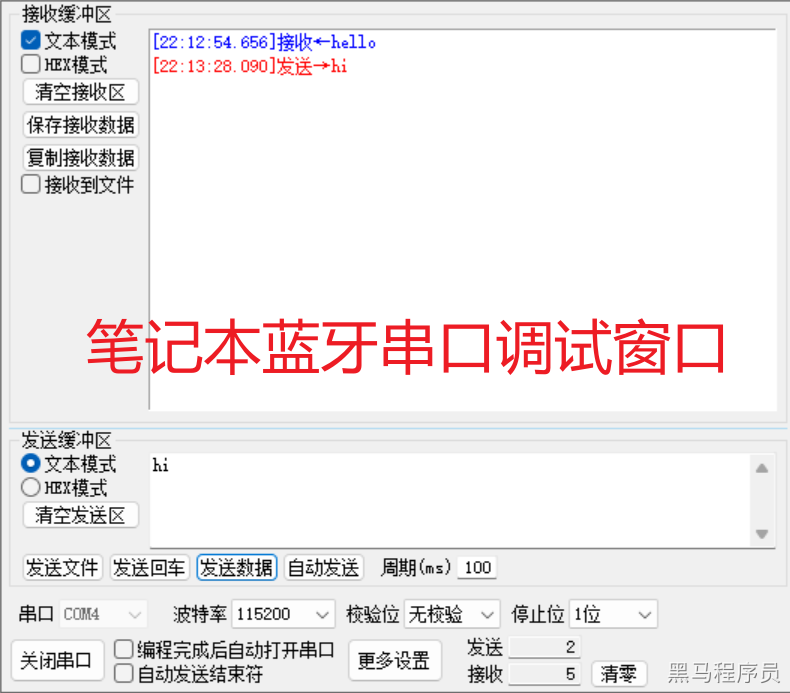</p><p data-lake-id="u50e1c1fd" id="u50e1c1fd"><br/></p><p data-lake-id="ub11293a2" id="ub11293a2"><span data-lake-id="u3f922eea" id="u3f922eea">如果无法找到蓝牙的串口，则在这里选择“高级”</span></p><p data-lake-id="u56934f65" id="u56934f65">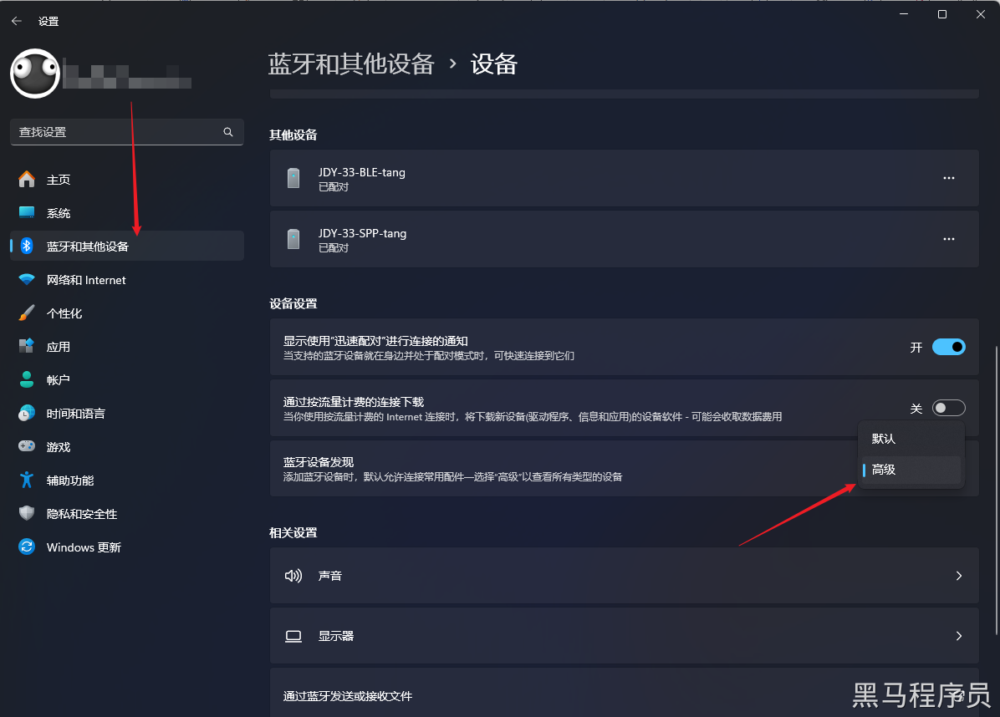</p><p data-lake-id="uabed9a67" id="uabed9a67" style="padding-left: 2em"><br/></p><h4 data-lake-id="xwo85" id="xwo85"><span data-lake-id="u1e986e1e" id="u1e986e1e">手机蓝牙调试</span></h4><p data-lake-id="uaf768de7" id="uaf768de7"><span data-lake-id="u64eb6d3a" id="u64eb6d3a">下载蓝牙调试宝，进行调试</span></p><p data-lake-id="ua1078c68" id="ua1078c68">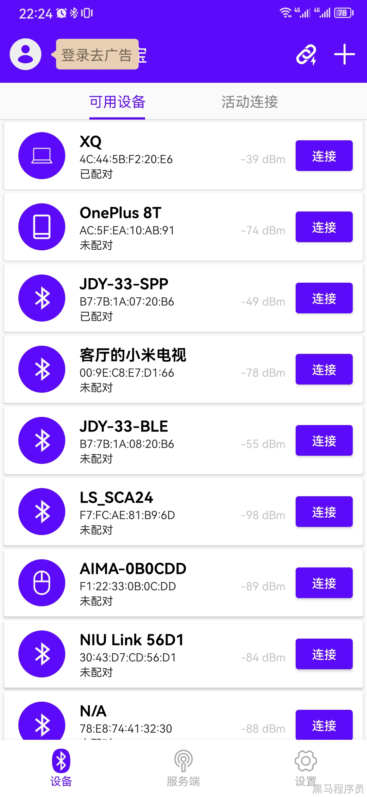</p><p data-lake-id="u99d86c91" id="u99d86c91"><span data-lake-id="u52aaad33" id="u52aaad33">找到</span><code data-lake-id="u4246bd3f" id="u4246bd3f"><span data-lake-id="u779d9939" id="u779d9939">JDY-33-SPP</span></code><span data-lake-id="uf4658fbc" id="uf4658fbc">点击连接</span></p><p data-lake-id="u03a4da9a" id="u03a4da9a">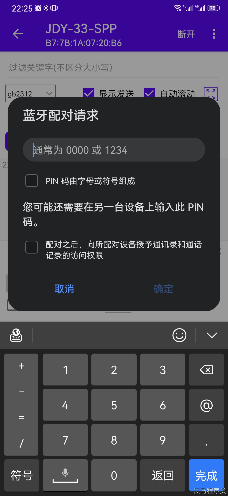</p><p data-lake-id="udb6a6bf4" id="udb6a6bf4"><span data-lake-id="u546cbdff" id="u546cbdff">输入配对密码1234</span></p><p data-lake-id="u2f47495c" id="u2f47495c">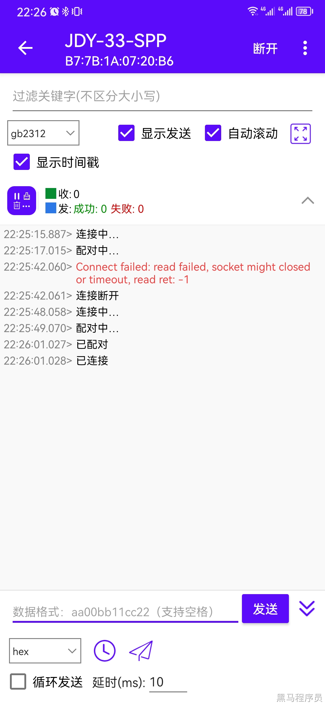</p><p data-lake-id="u71cd4e96" id="u71cd4e96"><span data-lake-id="uea63c404" id="uea63c404">通过调试界面进行调试。</span></p><h3 data-lake-id="R9cBU" id="R9cBU"><span data-lake-id="ub6ac9b9d" id="ub6ac9b9d">蓝牙驱动编写</span></h3><p data-lake-id="u36ead2c2" id="u36ead2c2"><span data-lake-id="ufb6b9b24" id="ufb6b9b24">开发板中，通过串口进行蓝牙数据的读写，因此，只需要做好读写操作即可.</span></p><span class="yuque-card-unsupported">[codeblock]</span><span class="yuque-card-unsupported">[codeblock]</span><h2 data-lake-id="AEN6O" id="AEN6O"><span data-lake-id="ud7adf195" id="ud7adf195">练习题</span></h2><ol list="u2912c5a0"><li data-lake-id="u31c47de0" fid="ua9f82c3d" id="u31c47de0"><span data-lake-id="uaccfffd3" id="uaccfffd3">通过蓝牙串口发送消息给小车，控制小车运动。</span></li></ol>